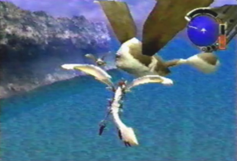
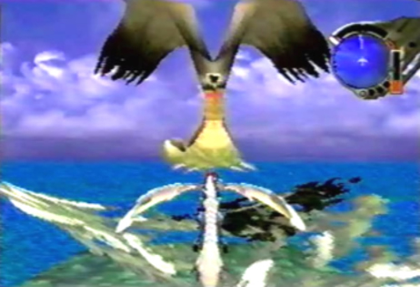

Baby Tobitama  |
Info When we first encountered these creatures, they immediately flew around us, wanting us to bring them back to their mother. They were fairly large for being baby Tobitamas. These strange creatures had one eye, a set of wings and a long protruding tail, with a large ball at the end. They happily flew to their mothers side, once we found the Tobitama nest. |
Mother Tobitama  |
Info The giant Tobitama mother was fairly odd as well. Two giant ears stretched off of its head. It, too had one giant eye and a long protruding tail with a ball at its end. Long claws could also be seen at the bottom of its body. The long ears of the mother Tobitama were also its wings. When we returned the 3 Baby Tobitamas to the nest, they all flew away and abandoned it. They left behind a rock-like secretion called a Tobitama Rock. This rock can be made into an antidote to cure Meccania fever. |